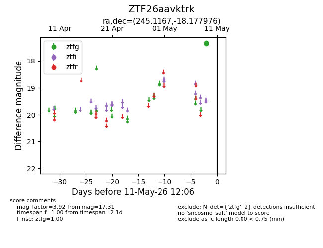
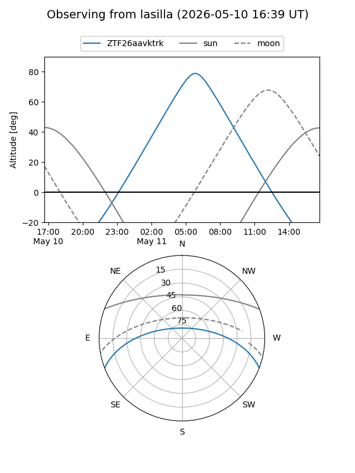
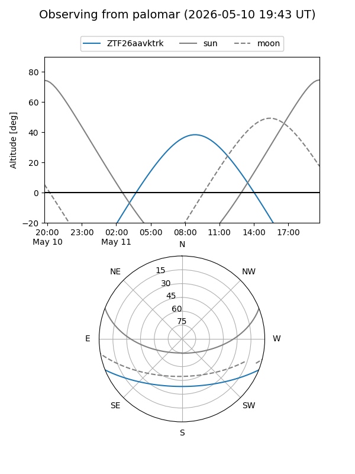

ZTF26aavktrk
Target ZTF26aavktrk at 2026-05-11 12:08
Aliases and brokers:
FINK: link
Lasair: link
ALeRCE: link
alt names
ZTF26aavktrk (ztf,fink_ztf)
Coordinates:
equatorial (ra, dec) = 245.1167,-18.17798
equatorial (HMS+DMS) = 16:20:28.00,-18:10:40.71
galactic (l, b) = (357.0828,+22.04508)
Flags:
Photometry:
last ztfg=17.31
2 ztfg detections
Lightcurve

Visibility


Additional plots